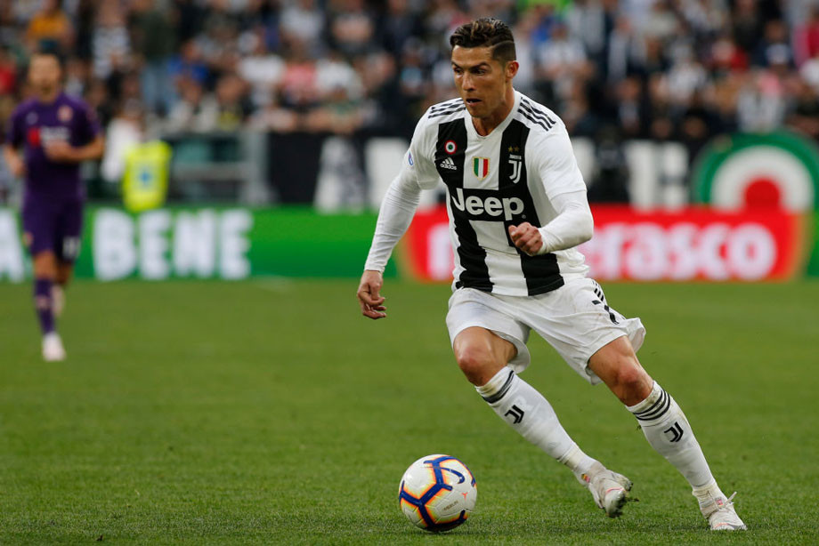
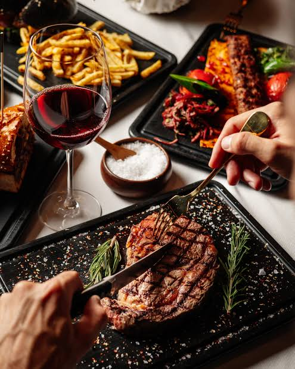

Здесь я расскажу про футбол.

я люблю играть в футбол. Мы с друзьями постоянно послше школы
играем в футбол. В детсве я занимался футболом и забивал голы. а сейчас я просто играю на школьном поле с друзьями.Здесь я буду рассказывать про тайский бокс.
Тайским бокс я начал заниматься недавно. За 3 недели я научиося
борьбе, бить, уколонятся и многое другое. Раньше мой брат тоже им занимался и я пошёл по его стопам. Мне нравится заниматся им потому что я учусь драться.Здесь я буду писать про мою любимою еду.

Я люблю кушать очень много разной еды в основном это стейк из ресторана, бургер,
пицца,пельмени. Я хотел бы дать совет. Я пробывал еду много где. Например в италии я там
пробывал спагети и пиццу и они вобще не чем не отличаются от обычных
Или во Франции я пробывал багет и он такой же так что ехать куда то радм еды нету смыслаю.